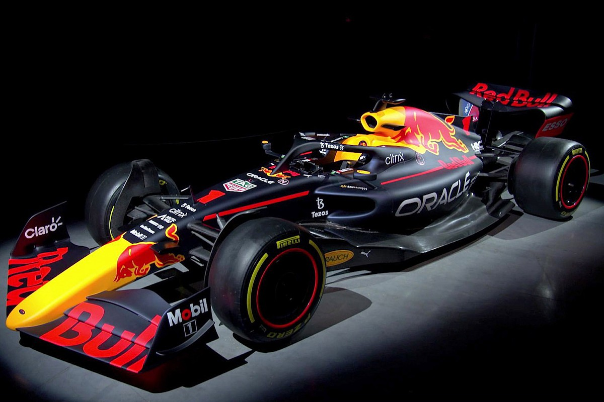

Bienvenido al Gran Premio
Descubre todos los detalles sobre uno de los eventos más emocionantes del calendario del automovilismo mundial.

Puntos clave del evento
- Entrenamientos libres los viernes
- Sesión de clasificación los sábados
- Carrera principal los domingos
Enlaces de interés externos/h3>
Puedes consultar más detalles en el sitio web oficial de la Fórmula 1.